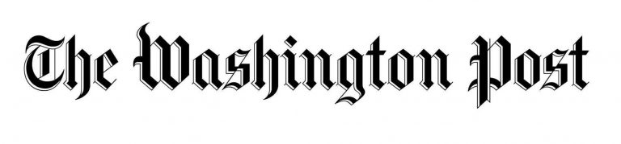

NEWS
Graham Nash on Joel in Washington Post Interview
September 17, 2019


“Joel Bernstein has a brilliant mind, a magnificent memory, and is an archivist, but most of all, he’s a brilliant photographer. He’s one of those people like Jim Marshall and Gered Mankowitz and myself who like to be invisible and only take one click of the Leica and hope that it’s not loud enough to disturb anybody. He doesn’t want his personality to be in the photograph at all. I met him on February the 1st of 1969, which was Joni’s first time playing Carnegie Hall, and we’ve been best friends ever since.”
WashingtonPost.com---------------------------------
The guy who curates Neil Young’s archives? He’s from Cheltenham
December 5th, 2018
"Over the the last five decades, Neil Young has regularly changed backup musicians, collaborators, and musical genres. But there has been one constant in the mercurial singer-songwriter’s life: Cheltenham Township native Joel Bernstein."
Philly.com---------------------------------
Photographer, guitar tech, archivist... Joel Bernstein on touring with Neil, rehearsing with Dylan and the story behind that infamous bootleg
Nov 20th, 2018

"Over the the last five decades, Neil Young has regularly changed backup musicians, collaborators, and musical genres. But there has been one constant in the mercurial singer-songwriter’s life: Cheltenham Township native Joel Bernstein."
Unkut.co.uk---------------------------------
Joel gets Lifetime Achievement Award from IPHF
October 17th, 2018
Joel Bernstein is an acclaimed photographer whose work, spanning more than four decades, chronicles the inner lives and public moments of some of the most important performers our time. They include Joni Mitchell, Neil Young, Bob Dylan, Bruce Springsteen, David Crosby, Stephen Stills, Graham Nash, Prince, Jackson Browne, Tom Petty, and many others.
"The 2018 Lifetime Achievement Award Winner and slate of Inductees to the Hall of Fame is stellar, and we are proud to include them," G. Robert Bishop, Chairman of the Induction Committee. For more than 50 years, the IPHF has been and remains the only organization worldwide that recognizes and honors significant contributors to the artistic craft and science of photography. The 2018 cohort of awardees and inductees join 88 other artists and innovators, including: Steve Jobs, Annie Leibovitz, Dorothea Lange and Ansel Adams.
Bernstein’s many album covers are listed among the most influential in rock music’s visual history. His first, at age 18, was Neil Young’s After the Gold Rush. Bernstein’s work is well-known in the world of music and is included in the permanent collection of the Rock & Roll Hall of Fame and Museum. His work has been published in a wide spectrum of books on music, musicians, and the music industry, as well as in The New York Times, Time, Rolling Stone and Vanity Fair. In the past decade, Joni Mitchell, Neil Young, Tom Petty and Bruce Springsteen each chose Joel’s photographs to be included in film, video and book projects documenting their careers.
---------------------------------
Joel To Receive 2018 Lifetime Achievement Aware from International Photography Hall of Fame and Museum
August 16th, 2018
"The diversity of work and offerings from this year's awardees provides for a full range of fabulous photography. We are proud to bring them into the Hall of Fame," said Richard Miles, Chairman of the Board.
A nominating committee of IPHF representatives and notable photographic leaders with a passion for preserving and honoring the art of photography selected the inductees. To be eligible for induction, nominees were considered based on the noteworthy contributions they made to the art or science of photography that had a significant impact on the photography industry and/or history of photography. The inductees, though widely differing in style and practice, are individually seen as significant innovators in their respective fields. They are all risk takers who introduced the world to new means of artistic representation and expression.
Bernstein’s many album covers are listed among the most influential in rock music’s visual history. His first, at age 18, was Neil Young’s After the Gold Rush. Bernstein’s work is well-known in the world of music and is included in the permanent collection of the Rock & Roll Hall of Fame and Museum. His work has been published in a wide spectrum of books on music, musicians, and the music industry, as well as in The New York Times, Time, Rolling Stone and Vanity Fair. In the past decade, Joni Mitchell, Neil Young, Tom Petty and Bruce Springsteen each chose Joel’s photographs to be included in film, video and book projects documenting their careers.
"The 2018 Lifetime Achievement Award Winner and slate of Inductees to the Hall of Fame is stellar, and we are proud to include them," G. Robert Bishop, Chairman of the Induction Committee. For more than 50 years, the IPHF has been and remains the only organization worldwide that recognizes and honors significant contributors to the artistic craft and science of photography. The 2018 cohort of awardees and inductees join 88 other artists and innovators, including: Steve Jobs, Annie Leibovitz, Dorothea Lange and Ansel Adams.
In addition to their commitment to the Photography Hall of Fame, the IPHF strives to educate the public about photographic history and to collect, exhibit, and preserve historical items and images. IPHF’s impressive permanent collection contains works from more than 500 artists, nearly 5,000 historical cameras, and more than 30,000 photographs. More information on the International Photography Hall of Fame and Museum can be found at IPHF.org
---------------------------------
The Photographers Who Know Springsteen's Best Angles Share Intimate Shots in New Exhibit
January 26th, 2016
"The Photography of Bruce Springsteen is a revealing back-to-analog history lesson, a time capsule of a way of working that has all but vanished. The new exhibit at Soho’s Morrison Hotel Gallery, on view through February 9, includes a collection of work from Frank Stefanko, Lynn Goldsmith, Neal Preston, Joel Bernstein, David Gahr, Jim Marchese, and Patrick Harbron. It’s a strong, emotional retrospective that collects the work of the very best photographers shooting Springsteen from 1972 to 1984, a period that covers the rise of his star from Asbury Park through his Born in the U.S.A. days. It’s also the first time these photographers have exhibited together, and it showcases pictures both familiar and never before seen."
VillageVoice.com---------------------------------
Bruce Springsteen, Impresario of His Own Image: Springsteen group photography show
January 20th, 2016
"The Photography of Bruce Springsteen is a revealing back-to-analog history lesson, a time capsule of a way of working that has all but vanished. The new exhibit at Soho’s Morrison Hotel Gallery, on view through February 9, includes a collection of work from Frank Stefanko, Lynn Goldsmith, Neal Preston, Joel Bernstein, David Gahr, Jim Marchese, and Patrick Harbron. It’s a strong, emotional retrospective that collects the work of the very best photographers shooting Springsteen from 1972 to 1984, a period that covers the rise of his star from Asbury Park through his Born in the U.S.A. days. It’s also the first time these photographers have exhibited together, and it showcases pictures both familiar and never before seen."
WSJ.com---------------------------------